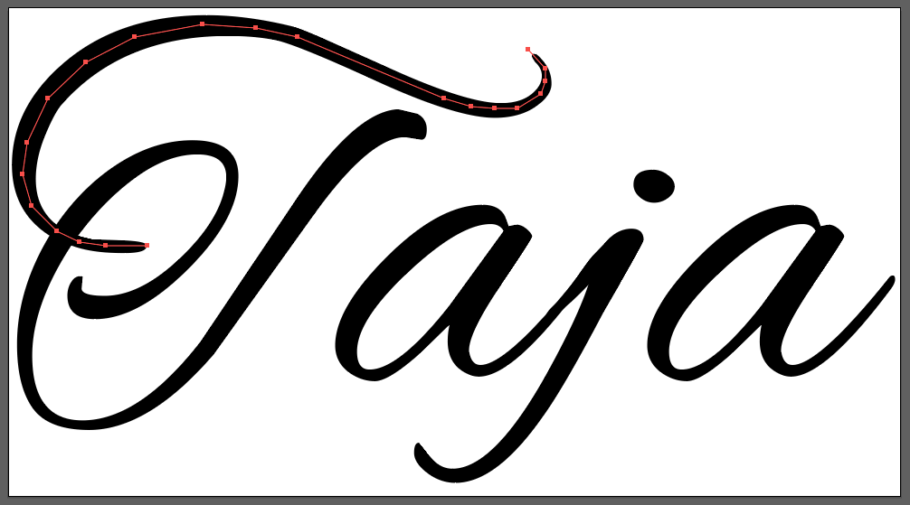

This is step by step guide for creating svg handdrawing animation. Example I will show you is part of project I am currently working on. You can use either font or custom made text or graphic of your choice.
No javascript or jquery is required for this animation. It is pure html and css. So, in the following steps we will need:
HTML and CSS
Adobe Illustrator
First step is to export svg file of your text of choice. First, open your file in Adobe Illustrator. If font is used, we need to make sure that every letter or segment of text is exported separately. Go on and:
Select your text layer
In main menu select Type -> Create Outlines
Now when you have layers for each letter or element, rename every one of them the way you prefer because later those names we be automaticaly generated id's when .svg is exported. Save file as svg.
Create or open HTML document. Open your newly created svg file inside text editor of your choice and copy <svg> element inside HTML file. Wrap your <path>s inside <defs> tags and then put every single path inside <clipPath> tags.
Every clipPath should have it's own id or class so we can use them in the next steps. Your code should look similar to this:
<svg id="taja" x="0px" y="0px" viewBox="0 0 422 231.8" xml:space="preserve">
<defs>
<clipPath id="clip-t-1">
<path id="T-1" d="M312,79.6c-2.2-1.6-4.4-2.4-6.8-2.4c-6.1,0-9.1,2.3-9.1,7c0,2.2,1,4.2,3,5.9c2,1.7,4.2,2.5,6.6,2.5c2.4,0,4.6-0.8,6.6-2.3 c2-1.5,3-3.3,3-5.3C315.2,83,314.1,81.2,312,79.6z"/>
</clipPath>
...
</defs>
</svg>
Creating paths for the animation
Now we need to get back to illustrator to create paths for the animation. We can do that using pen tool. Fill and Stroke should be transparent.

When you select path delete all layers and leave only selected path layer. Click save button but on SVG options window do not click ok to save file. Insted, click SVG Code button and new file containing svg path will be opened. Copy given path adn paste it under defs element inside working HTML file.
This process need to be done for every single letter or element which means that we need path for every clipPath element we previously created in HTML file.
If illustrator creates polygon instead of path
<polyline points="247,20 252.8,25.3 254,35 249,43 230,49 170,29 134,13 97,8 50,20 28,36 11,58 9,81 15,99 32,110 47,113 69,113 "/>
you just need to replace polyline with path, points with d and put letter M before numbers inside path.
<path d="M247,20 252.8,25.3 254,35 249,43 230,49 170,29 134,13 97,8 50,20 28,36 11,58 9,81 15,99 32,110 47,113 69,113 "/>
Now let's go and put all paths that are just created inside <g> element:
<g clip-path="url(#clip-t-1)" stroke-width="40">
<path class="taja-path taja-path--t-1" fill="none" stroke-miterlimit="0" d="M247,20 252.8,25.3 254,35 249,43 230,49 170,29 134,13 97,8 50,20 28,36 11,58 9,81 15,99 32,110 47,113 69,113 "/>
</g>
- We also need to create clip-path url which will contain id of coresponding clipPath.
- Stroke is optional so go ahead and adjust it to your needs.
When you are done with applying this procedure to all letters or elements we may proceed to the next step.
Now go open your css file. This is what animation should look like, go on and paste the following code into your css file:
@keyframes letter-animation {
0% {
stroke-dashoffset: 2600;
}
100% {
stroke-dashoffset: 0;
}
}
Now select path inside <g> with it's class and copy following properties:
.taja-path--t-1{
stroke-dasharray: 2600;
stroke-dashoffset: 2600;
stroke-width: 20;
animation: letter-animation 2s linear forwards;
}
One more thing that should be done is set animation delay to every single element so that animation can look good.
.taja-path--t-2 {
animation-delay: .3s;
}
-
Ofcourse, you should experiment with values of those properties and adjust it to your own needs.